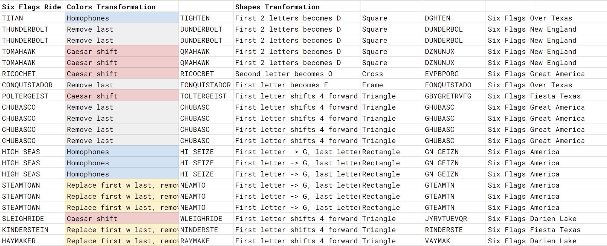

Solution: Six Flags
Answer: GOOFUS
Written by Jonathan
This puzzle has a bunch of gibberish. This puzzle is probably not going to be solved until I know my Patterns and maybe even Disney gets unlocked. However, once the round aha is clear, associating 2 puzzles to this together round puzzle should not be too difficult: we have only 2 other puzzles in this hunt that had to do with word transformations, Colors and Shapes, both of which could be used to help describe and identify flags. These words have exactly 2 transformations applied to them, first a color, then a shape. The transformations are described again below for easier reference:
| Color/Shape | Transformation |
|---|---|
| Blue | Homophone |
| Red | Ceasar Shift whole word (in this puzzle, only rot13 was used) |
| Yellow | Replace first letter with last letter, drop second last letter |
| Black | Drop first letter |
| White | Drop last letter |
| Triangle | Rot +4 to first letter |
| Frame | Change 1st letter to F |
| Circle | Drop first 2 letters, change 3rd letter to V |
| Square | Drop first letter change second letter to D |
| Cross | Change second vowel to U |
| Rectangle | Change 1st letter to G, last letter to N |
| Diamond | Change last vowel to O |
Some of the easiest ones to get would be kinderstein and sleighride. Once you have a few of these solved, either a simple Google search and the puzzle title would give away the fact that we are looking for theme park rides at various Six flags. These rides all belong to exactly 1 theme park. Once one ride has been identified, the transformations can also be tried forward on each of the rides in the park which might be easier to solve.

Once we have the transformations associated, we notice that we have rides in exactly 6 Six flags parks. That, along with the facts that each transformation is associated with a flag and a color, hints towards the fact that the transformations applied to each ride are describing actual flags. We need one more deduction, that we are describing 6 nautical flags, which are composed of simple shapes and colors (rather than national flags which mostly use just rectangles, or state flags that use symbols as well). Arranging alphabetically by name of the theme parks, we get the answer GOOFUS.
| Given word | Actual ride | Theme Park | Shapes | Nautical Flag |
|---|---|---|---|---|
| GN GEIZN | High Seas | Six Flags America | Blue Rectangle x3 | |
| GTEAMTN | Steamtown | Six Flags America | Yellow Rectangle x3 | G |
| VAYMAK | Haymaker | Six Flags Darien Lake | Yellow triangle | |
| JYRVTUEVQR | Sleighride | Six Flags Darien Lake | Red triangle | O |
| RINDERSTE | Kinderstein | Six Flags Fiesta Texas | Yellow triangle | |
| GBYGRETRVFG | Poltergeist | Six Flags Fiesta Texas | Red triangle | O |
| GHUBASC | Chubasco | Six Flags Great America | White triangle x4 | |
| EVPBPORG | Ricochet | Six Flags Great America | Red diamond | F |
| DUNDERBOL | Thunderbolt | Six Flags New England | White square x2 | |
| DZNUNJX | Tomahawk | Six Flags New England | Red square x2 | U |
| FONQUISTADO | Conquistador | Six Flags Over Texas | White frame | |
| DGHTEN | Titan | Six Flags Over Texas | Blue square | S |
Author's Notes
Technically the shapes provided should also include stripes, as well as something to describe the letters A and B to cover all letters of the maritime alphabet, but I wanted to narrow the search space a little. From listing out all the 1 word rides in Six flags theme parks, I can confidently say that Tornado is the most popular single word name for a ride for Six flags. Literally a week after this puzzle was written Six flags announced a merger with Cedar Fair, hopefully their website won't change by the time of the hunt. This puzzle was written so long ago that Six flags Great America still had Revolution on their webpage then!
This triplet came together in almost a surreal way, especially in having really lucky thematic answers in both shapes and colors (it’s unreal how thematic the answers were, especially when it had to work for the meta too), to being able to create 6 Six flags nautical flags. This puzzle originally had all different rides, but it was a pain to solve, and more importantly, I don’t know how I thought the nautical flag for G was black rectangles rather than blue ones. Having to clue homophones multiple times was rough, luckily there were 2 that worked.
During the hunt itself, we were made aware of 2 issues with this puzzle: Six Flags La Ronde (in Canada) also has a ride named Titan (but we concluded this is correctable later on with having 2 rides per Six Flags), and Steamtown is more like an area rather than a specific attraction, even though it is listed under all rides (but we had to change it to Steamtown because other words like FIREBIRD ends up getting transformed to GIREBN, which is ambiguous with FIREBALL, which is even more problematic.) Apologies if your team faced issues here. There was also the issue of teams ending up with GOOVUS (either by flipping the (color)(shape) transformation order, or just guessing the closest transformation). DIAMOND is associated with a transformation in Shapes, and this was necessary and intentional.